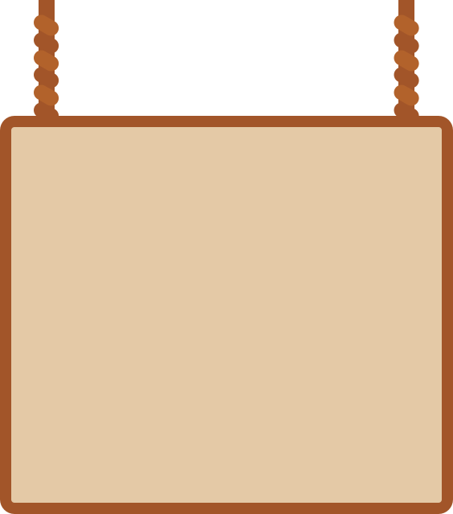

wermut



алфавит
Аа Бб Вв Гг Дд Ее Ёё Жж Зз Ии Йй Кк Лл Мм Нн Оо Пп Рр Сс Тт Уу Фф Хх Цц Чч Шш Щщ Ъъ Ыы Ьь Ээ Юю Яя
wermut

алфавит
Аа Бб Вв Гг Дд Ее Ёё Жж Зз Ии Йй Кк Лл Мм Нн Оо Пп Рр Сс Тт Уу Фф Хх Цц Чч Шш Щщ Ъъ Ыы Ьь Ээ Юю Яя
о шрифте
Wermut — сжатая serif-гарнитура
с чёткими, слегка «обрезанными»
засечками и плотным штрихом, которая
сразу задаёт винтажную, вывесочную
атмосферу.
Маффины